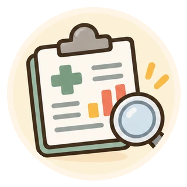

薬の正しい使い方 ／ 第8章

第8章｜医療保険・薬局の費用
薬局で支払うお金の仕組み
同じ薬でも、どうして支払う金額が違うの？ 医療保険の基本を、ひとつずつ確認しましょう。
①「1割・2割・3割負担」ってどういう意味？
保険診療の対象となる医療費のうち、本人が窓口で支払う割合のことです。
| 義務教育就学前 | 原則2割 |
|---|---|
| 義務教育就学後～69歳 | 原則3割 |
| 70～74歳 | 原則2割（現役並み所得者は3割） |
| 75歳以上など | 原則1割。所得に応じて2割または3割となる場合があります。 |
例：保険診療の費用が合計10,000円で3割負担なら、基本的な窓口負担は3,000円です（公費負担や保険外の料金などを考慮しない単純な例）。
子どもの医療費助成などにより、実際の窓口負担が軽減される場合があります。自治体や保険の種類によって取り扱いが異なります。
② 薬局の支払いは、なぜ薬代だけではないの？
保険調剤の費用には、薬の価格に加えて、処方箋の受付・調剤・薬の説明や服薬状況の確認などに関わる費用が含まれます。
薬剤料
処方された薬そのものの費用です。
調剤・管理などの費用
調剤基本料、調剤料や各種加算、服薬指導・薬学管理など、算定要件に基づく費用です。
薬の種類や日数、調剤の内容、薬局での対応などによって金額が異なります。領収証・調剤明細書で内訳を確認できます。わからない項目は薬剤師に尋ねてください。
③ ジェネリック医薬品を選ぶとどうなる？
ジェネリック医薬品（後発医薬品）は、先発医薬品と有効成分、含量、用法・用量、効能・効果などについて同等性が認められた薬です。添加物や形・色などは異なる場合があります。
薬の価格が異なるため、自己負担が変わることがあります。ただし、いつも後発医薬品のほうが安いとは限らず、製品や調剤内容も影響します。
ジェネリック医薬品は、先発医薬品と品質、有効性、安全性について同等であることを確認して承認されます。ただし、添加物・形状などが異なる場合があります。変更が不安な場合や、過去に合わなかった経験がある場合は医師・薬剤師へ相談してください。
④ 長期収載品の選定療養とは？
長期収載品とは、後発医薬品（ジェネリック医薬品）がある先発医薬品のことです。このうち制度の対象品目について、医療上の必要性ではなく本人の希望で先発医薬品を選ぶ場合、通常の保険診療の窓口負担に加えて特別の料金がかかることがあります。
特別の料金はどう計算する？
2024年10月の制度開始時には薬価差の4分の1相当、2026年6月1日からは薬価差の2分の1相当に見直されました。計算の基準には、対象の先発医薬品と対応する後発医薬品のうち薬価が最も高いものとの価格差を使います。実際の算定では所定の点数計算・端数処理が行われ、特別の料金には消費税がかかります。
先発品が1錠100円、対応する後発品の最高薬価が1錠60円なら、差額は40円。その2分の1の20円相当（税抜）が特別の料金の計算の基礎になります。実際の支払額は数量・点数計算・消費税などで変わり、20円がそのまま窓口での追加金額になるとは限りません。
特別の料金がかからない場合もある
- 医師・歯科医師が、効能・効果の違い、過去の副作用や治療効果などを踏まえて先発医薬品を使う医療上の必要性があると判断した場合
- 後発医薬品の在庫・供給状況などにより、後発医薬品を提供することが困難な場合
対象となるのは一定の条件を満たした品目であり、すべての先発医薬品に特別の料金がかかるわけではありません。また、先発医薬品を使うことが医学的に必要かどうかは、本人の希望だけで決まるものではありません。
どちらを選ぶか迷ったら
ジェネリック医薬品への変更に不安がある、以前の薬で副作用が出た、剤形が使いにくいなどの事情があれば、医師・薬剤師に伝えてください。費用だけで判断したり、自己判断で薬を中止したりしないことが大切です。
制度の適用・対象薬・実際の負担額は個別の事情で異なります。確認日：2026年11月4日。適用開始日：2026年6月1日。
⑤ お薬手帳は、何のために持っていくの？
お薬手帳は、使っている薬や過去の処方、副作用歴などを医療者に伝える手助けになります。複数の病院・薬局の薬や、市販薬・サプリメントの情報をまとめることが大切です。
- 飲み合わせや重複を確認しやすくなる
- 薬の変更や副作用歴を伝えやすくなる
- 災害時や急な受診時にも薬の情報を示せる
お薬手帳の持参状況などが薬局での算定に関係する場合もありますが、費用のためだけでなく安全な薬物治療のために活用しましょう。
⑥ 医療費助成を受けている場合は？
子ども、ひとり親家庭、障害のある方、指定難病、自立支援医療など、条件に応じて医療費を助成する制度があります。対象者・利用できる医療機関や薬局・自己負担・必要書類は制度ごとに異なります。
処方箋とともに、該当する受給者証や資格情報を薬局で提示してください。助成制度によっては、指定された薬局の利用が必要な場合があります。詳細は自治体・保険者・薬局へ確認しましょう。
⑦ 医療費が高額になったときは？
高額療養費制度は、1か月に支払った保険診療の自己負担が、年齢や所得などで決まる上限額を超えた場合に、超過分の負担を軽減する制度です。
- 限度額は年齢・所得区分などで異なります。
- 対象となる医療費や合算の条件があります。
- マイナ保険証を利用した限度額情報の確認や、限度額適用認定証などにより、窓口での支払いを限度額までにできる場合があります。
- 保険外の費用や、選定療養の特別料金などは原則として高額療養費の対象外です。
制度や限度額は変更されることがあります。医療費が高額になる見込みがある場合は、早めに加入している保険者へ相談してください。
よくある質問
Q. 同じ薬でも薬局によって金額が違うの？
薬局の施設基準、調剤内容、薬の種類、加算などで差が生じる場合があります。領収証・調剤明細書で確認できます。
Q. ジェネリックにすると、必ず安くなる？
必ずしもそうとは限りません。製品の価格、調剤内容などによって変わります。変更前に薬局で確認してください。
Q. 先発医薬品を使うと、必ず特別の料金がかかる？
いいえ。制度の対象品目であること、患者さんの希望による選択であることなどが条件です。医療上の必要性があると判断された場合や、後発医薬品の提供が困難な場合などは、特別の料金の対象外です。薬局でご確認ください。
Q. お薬手帳を忘れたら、薬はもらえない？
通常、お薬手帳がないだけで調剤できなくなるわけではありません。ただし、現在使っている薬やアレルギーなどの情報を伝えてください。
Q. 子どもの医療費は全国どこでも無料なの？
いいえ。自治体によって助成対象年齢や自己負担、県外受診時の取り扱いなどが異なります。お住まいの自治体の制度をご確認ください。
Q. 高額療養費制度は、薬局で支払った費用も対象？
保険診療の対象となる薬局での自己負担は、条件に応じて高額療養費の算定対象となります。ただし合算方法や年齢などによる条件があります。保険外の料金などは対象になりません。
参考資料・確認先
保険制度は改定されることがあります。最新の制度・個別の適用条件は厚生労働省、保険者、自治体、医療機関・薬局に確認してください。